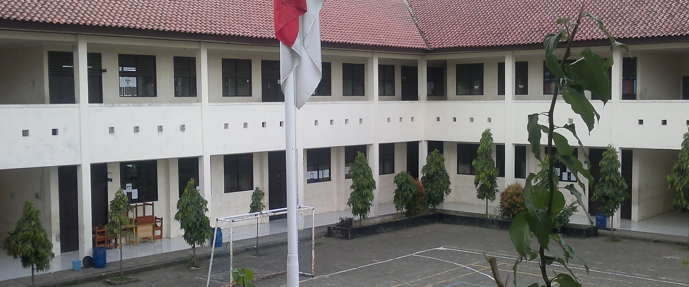
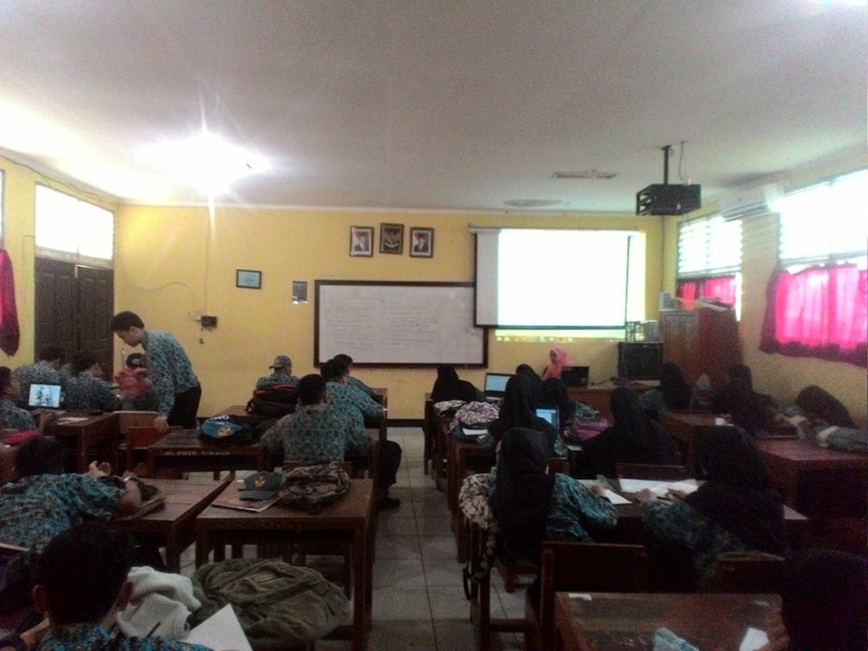

SMKN 5 Tangerang
SMKN 5 Tangerang adalah sekolah berbasis IT yang didirikan pada tahun 2007. SMKN 5 Tangerang merupakan salah satu Sekolah Menengah Kejuruan Negeri yang ada di Kota Tangerang Provinsi Banten, Indonesia.

Profil Wali Kelas
Sannah Ifa Purba atau yang biasa dipanggil "Ibu Sanah" Adalah seorang guru SMKN Negeri 5 kota Tangerang. Ia adalah wali kelas dari XI-RPL 1, dan ia mengajar mata pelajaran Kewirausahaan (KWH). Bu sanah ini terkenal dengan sebagai guru yang selalu galak dan cerewet. Dia selalu bersikap tegas agar murid-murid nya menurut dan patuh terhadap dirinya. Dan dengan sikap nya yang galak dan tegas ini menjadi ciri khas Bu Sanah.
Profil Kelas

Copyright © 2016. Design By Fachrizal Gunawan. All Right Reserved.